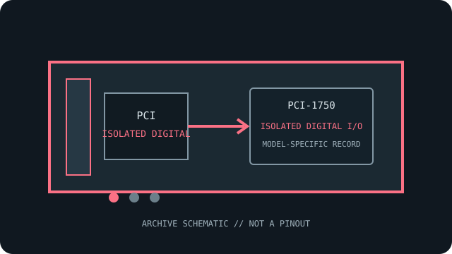

[ INDIVIDUAL COMPONENT // ISOLATED DIGITAL I/O ]
Advantech PCI-1750
Thirty-two-channel isolated digital I/O combines 16 inputs, 16 outputs and a counter on a PCI card. This model-specific archival record separates published specifications from system-compatibility assumptions.

MODEL SCOPE: Advantech PCI-1750. Confirm exact board label, revision, connector/accessory, firmware and host slot before installation.
Reference specifications
| Exact model | Advantech PCI-1750 |
|---|---|
| Host bus / lanes | 32-bit PCI; conventional PCI, not PCI Express. PCIe lanes: not applicable; this is a PCI model. |
| Channels, ranges and resolution | 16 isolated digital inputs and 16 isolated digital outputs; input signal range 5–50 VDC (or dry-contact sensing as configured); outputs are sink type, rated up to 200 mA/channel per product documentation. One 16-bit counter is provided. No analog measurement channels or ADC resolution. |
| Isolation / safety rating | 2,500 VDC channel isolation per Advantech specifications. Treat as a component isolation withstand value, not as a system safety or hazardous-location certification. |
| Operating system and API | Windows: Advantech DAQNavi / device-driver API family; verify that the selected legacy driver supports the exact PCI-1750 and OS before installation. |
| Compatibility notes | Check external supply, polarity, current budget and inductive-load suppression before wiring. Use the specified terminal accessory and follow the manual for dry-contact/wet-contact configuration. |
Compatibility, care & archival notes
- Verify the full model suffix and revision against the manufacturer's manual; similarly numbered variants can change I/O functions.
- Use a conventional PCI slot of supported voltage/keying; the card is not a PCIe x1/x4/x8/x16 device.
- Record driver version, OS bitness, connector accessories, wiring and calibration state alongside any installation.
Sources & further reading
- Advantech — PCI-1750 product specifications and technical downloadsManufacturer specifications and technical-download entry for the exact model; verify the board revision and document revision.
- Advantech — Advantech manual search for PCI-1750Manufacturer manual or datasheet source for installation, signal limits and programming; the model-specific guide governs exact compatibility.
- Advantech — DAQNavi Assistant VI User GuideManufacturer software/API reference; not a guarantee that a legacy board is supported by every current OS package.